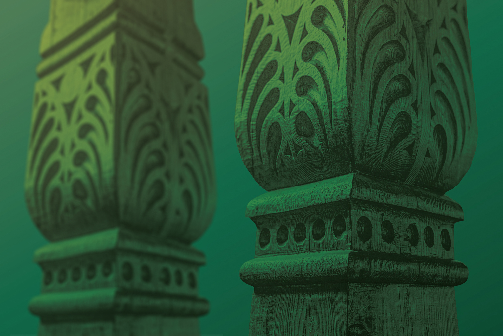

Dni Architektury Drewnianej 2026
21–23 sierpnia 2026 · Świeradów-Zdrój i Leśna. Fundacja jako partner regionalny i koordynator programu dolnośląskiego.
Strona główna/Projekty
Od dużych spotkań społeczności po materiały edukacyjne, współpracę instytucjonalną i działania systemowe na rzecz ochrony dziedzictwa.

21–23 sierpnia 2026 · Świeradów-Zdrój i Leśna. Fundacja jako partner regionalny i koordynator programu dolnośląskiego.
W ramach programu Narodowego Instytutu Dziedzictwa Fundacja będzie prowadzić Akademię Ruinersów — cykl praktycznej edukacji dla właścicieli historycznych budynków. Skupimy się na świadomym planowaniu remontu, rozpoznawaniu zagrożeń, tradycyjnych materiałach i technikach oraz podejmowaniu decyzji, które pozwalają zachować wartość i charakter starych domów.
Projekt porządkujący regionalną wiedzę o domach przysłupowych, chatach sudeckich, szachulcu, drewnie, glinie i polepie.
Fundacja jest inicjatorem i operatorem sieci organizacji społecznych oraz Partnerów Wspierających.
Finał 7–13 września 2026 w Krakowie. Projekt łączący dziedzictwo, przyszłość i społeczne modele opieki nad historycznymi miejscami.
Wojciechów · około 300 uczestników.
data i program
10 maja 2025 · Bukowiec · około 500 uczestników.
Leśna · około 250 uczestników · Dzień Otwartych Domów Przysłupowych.
29–30 stycznia 2026 · Lubomierz · około 300 uczestników.
31 marca 2026 · Leśna. Ochrona historycznej zabudowy i współpraca samorządów, właścicieli i NGO.
liczba uczestników i pełny program
Leśna · około 200 uczestników · Dzień Otwartych Domów Przysłupowych.
27 czerwca 2026 · Lubomierz · około 500 uczestników.
Udział Fundacji w ogólnopolskiej debacie i wymianie doświadczeń dotyczącej dziedzictwa.
szczegóły udziału
Współpraca transgraniczna i wymiana wiedzy dotyczącej domów przysłupowych.
data, partnerzy i relacja
Spotykamy się podczas Zlotów Ruinersów, konferencji, warsztatów, Dni Otwartych Domów Przysłupowych oraz rozmów z samorządami i służbami konserwatorskimi.